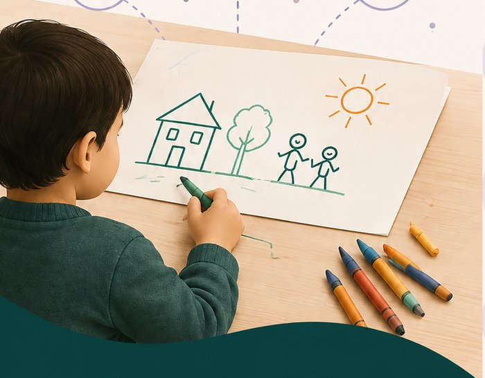
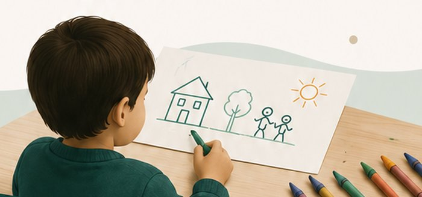
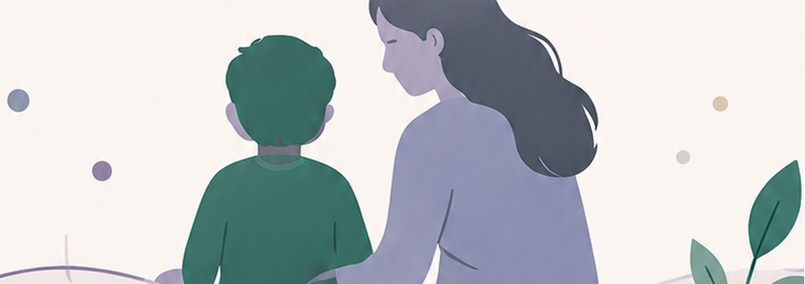
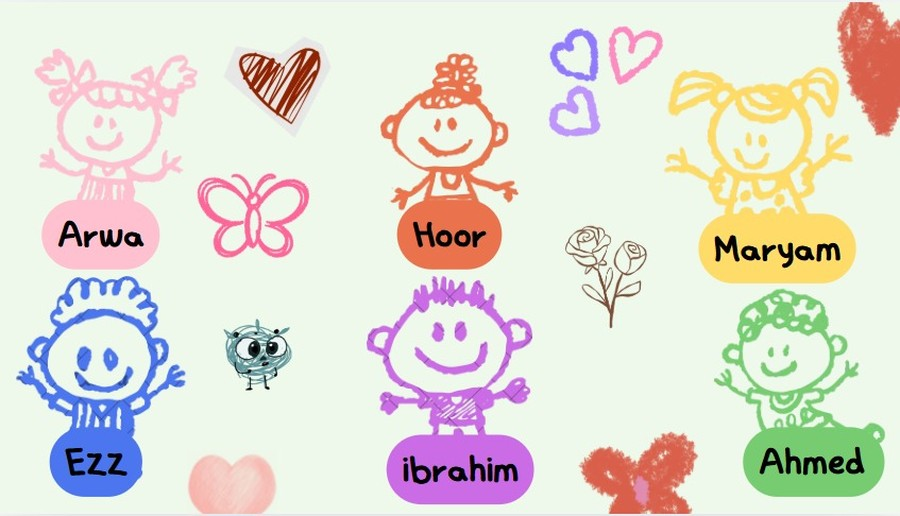

Every child has a story. Not every story is heard.
Looking beyond the picture — an AI-powered platform that helps parents and clinicians gain early, supportive insight into a child's emotional and developmental world, through their drawings.

Behind the Seens is an AI-powered platform designed to help parents and clinical experts gain early, supportive insight into a child's emotional and developmental patterns through their drawings.
We combine computer vision, AI, and human clinical expertise to turn a simple drawing into meaningful insight — supporting early intervention and personalized guidance.
Not a diagnosis.A supportive screening and analytical tool, always paired with qualified clinical review.

Every drawing tells a story. For many children — especially those who struggle to express themselves verbally — drawings can be a powerful voice.
Feelings like anxiety, frustration, or sadness often go unnoticed.
Delays or challenges may not be apparent until critical time is lost.
Guidance, clarity, and support can make a real difference in a child's future.
A parent uploads the child's drawing and adds brief context.
AI reads visual and semantic features within the drawing.
The system generates emotional insights and an ASD screening probability.
A qualified clinical expert reviews the AI-generated results.
The expert shapes personalized guidance and activities.
Parents follow progress and access ongoing guidance over time.
A future where every child's emotions and developmental needs can be better understood — even when they cannot fully express them through words.

So every story is finally heard.
The Behind the Seens PM Leadership Team — six people who believe every child's story deserves to be heard.
